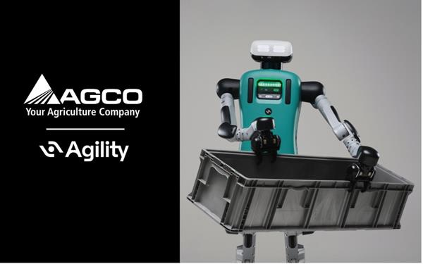

Digit 4商业部署代际（官网回溯）
Agility Robotics · 双足人形 · 状态待核实
参数深挖已取得2025续航与2026投资者日的Digit 4负载/末端；早期GXO试点身高重量另存于缺失原因，不与更新后的硬件拼为同一配置。图片为 Agility 官方新闻分发的 Digit 4 宣传图，含 AGCO 标识与料箱，不表示计划中的试点已实施。

完整规格与依据
身体规格
- 身高
- 待核实
缺失原因：版本待确认。官网早期GXO试点稿给出5英尺9英寸（175.26 cm），但2025升级明确更换肢体，尚无把该尺寸确认到本条商业部署最新硬件修订的资料；不拿Digit 5的181 cm回填；这是本次核验边界，不表示厂家从未披露或该功能不存在
本项资料核验 2026-10-24；相关链接不表示厂商从未披露。 - 整机重量
- 待核实
缺失原因：版本待确认。官网早期GXO试点稿给出140 lb（约63.50 kg）；2025升级后肢体/末端和电池改变，未核实当前修订重量及是否含电池，不把早期重量与新电池拼成单一配置；这是本次核验边界，不表示厂家从未披露或该功能不存在
本项资料核验 2026-10-24；相关链接不表示厂商从未披露。 - 自由度
- 待核实
缺失原因：已查2025硬件升级稿及2026投资者日第31页，未取得该修订的整机自由度及计数范围；早期Digit每臂4 DoF不是本代全身总数；这是本次核验边界，不表示厂家从未披露或该功能不存在
本项资料核验 2026-10-24；相关链接不表示厂商从未披露。 - 末端执行器
- 任务专用固定末端 已核对原文 · 厂商资料
公司2026-10-06投资者日第31页明确Digit 4为task-specific/fixed；不继承Digit 5可换法兰。2025升级稿另称增加抓取角度，但未列末端SKU或自由度
本项资料核验 2026-10-24
运动与操作
- 操作负载
- 15.876 kg 已核对原文 · 厂商资料
公司2026-10-06投资者日第31页：Digit 4 lifting capacity至多35 lb，乘0.45359237换算kg；未列单臂/双臂、姿态或持续工况，非独立实测
本项资料核验 2026-10-24 - 移动速度
- 待核实
缺失原因：已查2025升级稿与2026投资者日代际表，未取得Digit 4额定移动速度；搬箱数量/每天工作时间不是m/s，不移植早期研究样机速度；这是本次核验边界，不表示厂家从未披露或该功能不存在
本项资料核验 2026-10-24；相关链接不表示厂商从未披露。
电池与工作
- 工作时间
- 4 h 已核对原文 · 厂商资料
2025官方硬件升级稿：电池续航至多4小时；负载/任务工况未列。不把投资者日第31页每天至多约16小时的充放电累计输出当单次续航
本项资料核验 2026-10-24 - 电池能量
- 待核实
缺失原因：已查2025电池升级稿，只获得至多4小时续航与自动回充，未取得可归属该硬件修订的Wh标称能量；这是本次核验边界，不表示厂家从未披露或该功能不存在
本项资料核验 2026-10-24；相关链接不表示厂商从未披露。 - 电池容量
- 待核实
缺失原因：已查2025电池升级稿，未取得该包Ah/mAh及标称电压；不能用续航时数反推容量；这是本次核验边界，不表示厂家从未披露或该功能不存在
本项资料核验 2026-10-24；相关链接不表示厂商从未披露。
感知与开发
- 感知配置
- 360°环境感知（人、物体与周围环境） 已核对原文 · 厂商资料
2026-06投资者材料第16页明确标Digit v4；仅收录该代感知范围描述，传感器型号/数量仍待核实，不套用Digit 5的视觉/深度/IMU清单
本项资料核验 2026-10-24 - 计算平台
- 待核实
缺失原因：第16页明确Digit v4使用节能边缘AI计算，但未列CPU/GPU型号和算力；Digit 5的NVIDIA IGX Thor不能回填第四代；这是本次核验边界，不表示厂家从未披露或该功能不存在
本项资料核验 2026-10-24；相关链接不表示厂商从未披露。 - 二次开发
- 待核实
缺失原因：资料有Arc、webhook及WMS/WES/MES/PLC集成，但未证明对客户开放本代机器人SDK、关节控制权限或支持范围；未知不是不支持；这是本次核验边界，不表示厂家从未披露或该功能不存在
本项资料核验 2026-10-24；相关链接不表示厂商从未披露。
采购信息
- 美元报价
- 待核实
缺失原因：第45/66页的租赁、购机/部署/订阅成本是Digit 5示例经济模型，不是Digit 4截至核验日的美元整机报价；BOM成本不是售价；这是本次核验边界，不表示厂家从未披露或该功能不存在
本项资料核验 2026-10-24；相关链接不表示厂商从未披露。 - 人民币报价
- 待核实
缺失原因：已查投资者日与官网，未取得Digit 4人民币整机报价；不以美元示例经济模型换算中国售价；这是本次核验边界，不表示厂家从未披露或该功能不存在
本项资料核验 2026-10-24；相关链接不表示厂商从未披露。